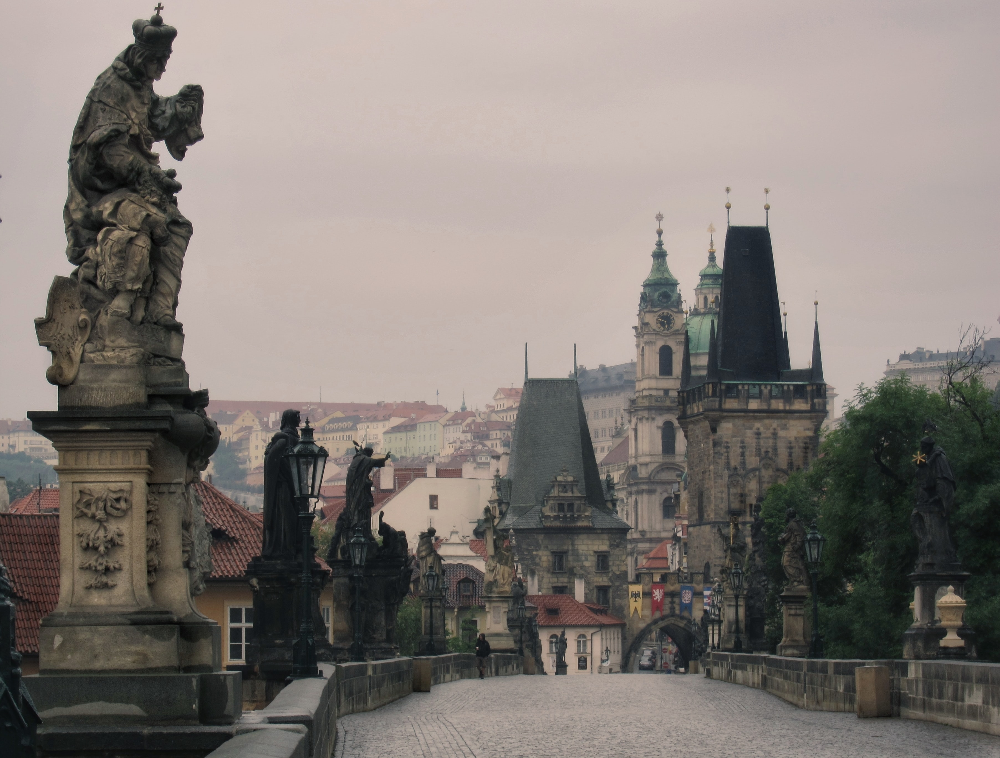
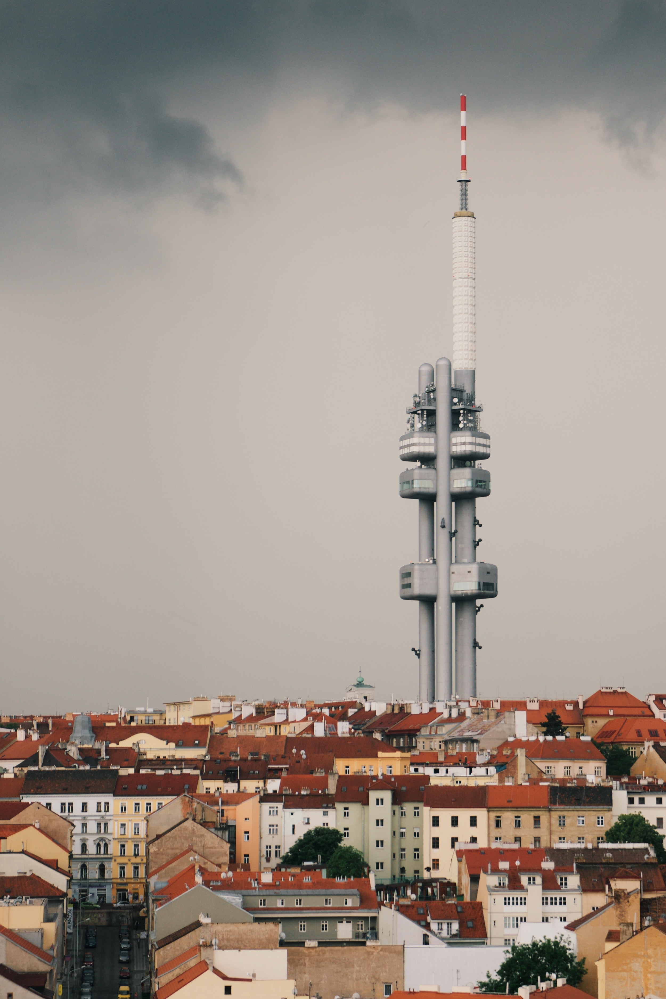
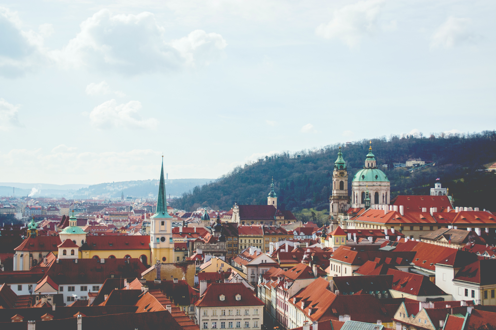

Prague is capital of the Czech Republic. Lying at the heart of Europe, it is one of the continent’s finest cities and the major Czech economic and cultural centre. The city has a rich architectural heritage that reflects both the uncertain currents of history in Bohemia and an urban life extending back more than 1,000 years.
The city’s core, with its historic buildings, bridges, and museums, is a major centre of employment and traffic congestion. Around the core is a mixed zone of industrial and residential areas, containing about half the city’s population and nearly half its jobs. Surrounding this area is the outer city development zone, and beyond this is yet another zone of development containing new industrial areas, parks and recreation areas, and sports facilities. Finally, there is a belt of agricultural land and open countryside, where farms and market gardening projects satisfy Prague’s demand for food.
  